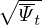

9.1 Deï¬nition of general toroidal angle ζ
In Sec. 5.1, we introduced the local safety factor  (ψ,𝜃). Equation (154) indicates that if the Jacobian
is chosen to be of the particular form 𒥠= h(ψ)R2, where h(ψ) is an arbitrary function of ψ, then the
local safety factor is independent of 𝜃, i.e., magnetic line is straight in (𝜃,ϕ) plane. On the other hand,
if we want to make ï¬eld line straight in (𝜃,ϕ) plane, the Jacobian must be chosen to be of the speciï¬c
form 𒥠= h(ψ)R2. We note that, as mentioned in Sec. 5.2, the poloidal angle is fully determined by the
choice of the Jacobian. The speciï¬c choice of 𝒥 = α(ψ)R2 is usually too restrictive for choosing
a desired poloidal angle (for example, the equal-arc poloidal angle can not be achieved
by this choice of Jacobian). Is there any way that we can make the field line straight in a
coordinate system at the same time ensure that the Jacobian can be freely adjusted to obtain
desired poloidal angle? The answer is yes. The obvious way to achieve this is to define a new
toroidal angle ζ that generalizes the usual toroidal angle ϕ. Deï¬ne a new toroidal angle ζ
by[10]
(ψ,𝜃). Equation (154) indicates that if the Jacobian
is chosen to be of the particular form 𒥠= h(ψ)R2, where h(ψ) is an arbitrary function of ψ, then the
local safety factor is independent of 𝜃, i.e., magnetic line is straight in (𝜃,ϕ) plane. On the other hand,
if we want to make ï¬eld line straight in (𝜃,ϕ) plane, the Jacobian must be chosen to be of the speciï¬c
form 𒥠= h(ψ)R2. We note that, as mentioned in Sec. 5.2, the poloidal angle is fully determined by the
choice of the Jacobian. The speciï¬c choice of 𝒥 = α(ψ)R2 is usually too restrictive for choosing
a desired poloidal angle (for example, the equal-arc poloidal angle can not be achieved
by this choice of Jacobian). Is there any way that we can make the field line straight in a
coordinate system at the same time ensure that the Jacobian can be freely adjusted to obtain
desired poloidal angle? The answer is yes. The obvious way to achieve this is to define a new
toroidal angle ζ that generalizes the usual toroidal angle ϕ. Deï¬ne a new toroidal angle ζ
by[10]
 | (246) |
where δ = δ(ψ,𝜃) is a unknown function to be determined by the constraint of ï¬eld line being straight
in (𝜃,ζ) plane. The new local safety factor in (ψ,𝜃,ζ) coordinates,  new = B ⋅∇ζ∕B ⋅∇𝜃, is written as
In (ψ,𝜃,ϕ) coordinates, the above equation is written as where 𝒥 is the Jacobian of (ψ,𝜃,ϕ) coordinates. Using the expression of the local safety factor given in
Eq. (154), the above equation is written
 | (249) |
To make the new local safety factor be independent of 𝜃, the right-hand side of Eq. (248) should be
independent of 𝜃, i.e.,
 | (250) |
where c(ψ) can be an arbitrary function of ψ. The most convenient choice for c(ψ) is c(ψ) = q, i.e.,
making the new local safety factor be equal to the original global safety factor, i.e.,  new = q. In this
case, equation (250) is written as
new = q. In this
case, equation (250) is written as
 | (251) |
which can be integrated over 𜃠to give
 | (252) |
where 𝜃ref is an arbitrarily chosen starting poloidal angle for the integration, c(ψ,𝜃ref) is the
constant of integration. Since there is no other requirements for the ψ dependence of δ, the
constant of integration, c(ψ,𝜃ref), can be chosen to be zero. Then the above equations is
written
 | (253) |
i.e.,
 | (254) |
Substituting the above expression into the deï¬nition of ζ (Eq. 246), we obtain
 | (255) |
i.e.,
 | (256) |
which is the formula for calculating the general toroidal angle. If the 𜃠is a straight-ï¬eld line poloidal
angle, then ζ in Eq. (256) reduces to the usual toroidal angle ϕ.
In summary, magnetic ï¬eld line is straight in (𝜃,ζ) plane with slope being q if ζ is deï¬ned by Eq.
(256). In this method, we make the ï¬eld line straight by deï¬ning a new toroidal angle, instead of
requiring the Jacobian to take particular forms. Thus, the freedom of choosing the form of
the Jacobian is still available to be used later to define a good poloidal angle coordinate.
Note that the Jacobian of the new coordinates (ψ,𝜃,ζ) is equal to that of (ψ,𝜃,ϕ). [Proof:
] Also note that δ(ψ,𝜃) deï¬ned by Eq. (253) is a periodic function of 𝜃. [Proof: Equation (253) implies
that ]
[In numerical implementation, the term ∫
𝜃ref𜃠d𜃠appearing in δ is computed by using
d𜃠appearing in δ is computed by using
For later use, from Eq. (253), we obtain
This formula is used in GTAW code to calculate ∂(δq)∕∂ψ, where the derivative ∂(g∕Ψ′)∕∂ψ is
calculated numerically by using the central difference scheme.]
Â
![B ⋅∇ ζ
ˆqnew = ------
B ⋅∇ 𝜃
= (∇Ψ-×-∇-ϕ+-g∇-ϕ)⋅∇-(ϕ-−-qδ)
(∇Ψ × ∇ ϕ+ g∇ ϕ)⋅∇ 𝜃
= (∇Ψ-×-∇-ϕ+-g∇-ϕ)⋅[∇ϕ-−-∇(qδ)]
(∇ Ψ ×∇ ϕ)⋅∇ 𝜃
g|∇ϕ|2 + (∇Ψ × ∇ ϕ)⋅[− ∇ (qδ)]
= ------(∇-Ψ-×-∇ϕ)⋅∇-𝜃-------. (247)](tokamak_equilibrium330x.png)
![[ ]
g|∇ ϕ|2 − Ψ′(∇ψ × ∇ϕ) ⋅ ∂(qδ)∇𝜃 + ∂(qδ)∇ ψ
ˆqnew = -----------------------∂𝜃------∂ψ------
− Ψ′𝒥 −1
= −-g-𝒥--− q∂δ, (248)
Ψ ′R2 ∂𝜃](tokamak_equilibrium331x.png)